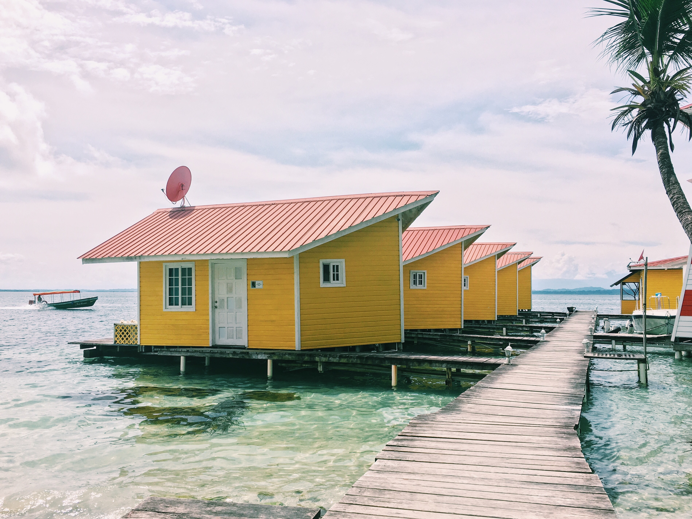

Bienes raíces en Bocas del Toro
Bocas del Toro real estate
Qué estás comprando realmente en el archipiélago, por qué el acceso al agua manda sobre los metros cuadrados, y por qué el problema del título aquí es peor que en las tierras altas.
What you're actually buying in the archipelago, why water access matters more than square metres, and why the title problem is worse here than in the highlands.

Construimos en cuatro mercados panameños y Bocas es el único donde la primera conversación no es sobre diseño ni presupuesto. Es sobre si el terreno existe legalmente. En Boquete esa pregunta descarta a algunos vendedores. En Bocas descarta a muchos, y la gente lo descubre tarde porque el archipiélago se vende con fotos de agua turquesa y nadie pone la palabra derecho posesorio en el anuncio.
We build in four Panamanian markets and Bocas is the only one where the first conversation isn't about design or budget. It's about whether the land legally exists. In Boquete that question screens out some sellers. In Bocas it screens out a lot of them, and people find out late, because the archipelago is sold with photographs of turquoise water and nobody puts the words derecho posesorio in the listing.
Las cuatro islas, y por qué importanThe four islands, and why they matter
Isla Colón tiene el aeropuerto, el hospital, el pueblo y prácticamente todos los servicios. Por eso tiene los precios más altos y la reventa más fácil. Carenero y Solarte están a cinco o diez minutos en taxi acuático, más tranquilas y más baratas. Bastimentos es la más grande, la más salvaje y la más barata, con la menor infraestructura y la mayor proporción de tierra sin titular.
Isla Colón has the airport, the hospital, the town, and nearly all the services. That's why it carries the highest prices and the easiest resale. Carenero and Solarte are five to ten minutes away by water taxi, quieter and cheaper. Bastimentos is the largest, wildest and cheapest, with the least infrastructure and the highest share of untitled land.
La consecuencia práctica es simple y la gente la subestima: comprar en cualquier isla que no sea Colón convierte el transporte acuático en parte de tu vida diaria. No es una excursión. Es cómo llegas al médico, al supermercado y al aeropuerto, de noche y bajo la lluvia también.
The practical consequence is simple and people underestimate it: buying anywhere except Colón makes water transport part of your daily life. It isn't an excursion. It's how you reach the doctor, the supermarket and the airport, at night and in the rain as well.
Qué cuesta en 2026What it costs in 2026
Rangos reales del mercado a agosto de 2026, no promedios nacionales:
Real market ranges as of August 2026, not national averages:
- Apartamentos y condominios en Bocas Town: $150,000 a $350,000
- Bocas Town apartments and condos: $150,000 to $350,000
- Casas cerca de la playa en Isla Colón: $300,000 a $750,000
- Homes near the beach on Isla Colón: $300,000 to $750,000
- Terreno titulado en la costa oeste de Colón: $85 a $125 por m²
- Titled land, Colón's west coast: $85 to $125 per m²
- Casa de 3 recámaras en derecho posesorio, lote de 655 m²: alrededor de $245,000
- Three-bedroom rights-of-possession home, 655 m² lot: around $245,000
- Edificio titulado de 7 unidades de renta, centro de Bocas Town: alrededor de $235,000
- Titled seven-unit rental building, central Bocas Town: around $235,000
- Finca de 60 acres en Bastimentos, 24.6 ha tituladas: alrededor de $1,499,000
- Sixty-acre Bastimentos farm, 24.6 ha titled: around $1,499,000
Fíjate en la casa de $245,000 en derecho posesorio junto al terreno titulado de $85 a $125 el metro. Ese descuento no es una ganga. Es el riesgo, con precio.
Look at the $245,000 rights-of-possession house next to titled land at $85 to $125 the square metre. That discount isn't a bargain. It's the risk, priced.
El acceso al agua manda sobre los metrosWater access beats square metres
En las tierras altas el precio sigue a la elevación y a la vista. Aquí sigue al agua. Un lote con muelle propio, calado suficiente para una lancha y protección del oleaje vale un múltiplo de un lote más grande a cien metros tierra adentro. No es capricho: sin muelle usable, tu casa depende del muelle de otro, y eso se vuelve una negociación permanente.
In the highlands, price follows elevation and view. Here it follows water. A lot with its own dock, enough draft for a boat and shelter from swell is worth a multiple of a larger lot a hundred metres inland. That isn't fashion. Without a usable dock, your house depends on somebody else's, and that becomes a permanent negotiation.
Pregunta por el calado en marea baja, no en la foto. Y pregunta de dónde viene el oleaje en temporada, porque un muelle precioso en marzo puede ser inservible en diciembre.
Ask about the draft at low tide, not in the photograph. And ask where the swell comes from in season, because a beautiful dock in March can be unusable in December.
El derecho posesorio, y por qué aquí es peorRights of possession, and why it's worse here
Panamá reconoce la posesión sobre tierra nacional para quien la ha mantenido más de cinco años. Eso crea propiedades más baratas con la posibilidad de titularse después. En Chiriquí ese camino a veces funciona. En las islas es mucho más difícil, porque un lote puede cargar además superposiciones de territorio indígena y de zona marítima. El proceso de titulación puede tomar de dos a cinco años, y no hay resultado garantizado.
Panama recognises possession over national land for anyone who has held it more than five years. That creates cheaper property with the possibility of titling later. In Chiriquí that route sometimes works. On the islands it's much harder, because a parcel can also carry indigenous territory and maritime zone overlays on top. Titling can take two to five years, with no guaranteed outcome.
El patrón que más daño hace es este: lotes anunciados como "frente al mar" o "vista al océano" que resultan ser derecho posesorio, con la distinción difuminada hasta después del cierre. No siempre es mala fe. A veces el vendedor tampoco lo tiene claro. Da igual: el resultado para ti es el mismo.
The pattern that does the most damage is this: lots marketed as "beachfront" or "ocean view" that turn out to be rights of possession, with the distinction blurred until after closing. It isn't always bad faith. Sometimes the seller isn't clear on it either. That makes no difference to your outcome.
Pide el Certificado del Registro Público con el folio y el propietario registrado. Si no hay folio, no está titulado. Todo lo demás es conversación, y no vale la pena tenerla hasta que esa hoja exista.
Ask for the Certificado del Registro Público showing the folio and registered owner. If there's no folio, it isn't titled. Everything else is conversation, and it isn't worth having until that sheet exists.
Fuera de la red no es exótico, es lo normalOff-grid isn't exotic here, it's normal
En Boquete el agua y la luz son una casilla que marcas. En Bocas son parte del diseño. Solar, captación de lluvia y séptico bien dimensionado no son mejoras opcionales fuera de Bocas Town, son el sistema base. La humedad y el salitre además cambian lo que puedes usar: herrajes, sujeciones y acabados que aguantan diez años en las tierras altas se comen en tres frente al mar.
In Boquete, water and power are a box you tick. In Bocas they're part of the design. Solar, rainwater capture and a properly sized septic system aren't optional upgrades outside Bocas Town, they're the baseline. Humidity and salt also change what you can use: hardware, fixings and finishes that last ten years in the highlands get eaten in three on the water.
Esto es caro de improvisar y barato de planear. Es también la razón por la que una casa construida para Bocas cuesta más por metro que la misma casa en Chiriquí, y por la que las que se construyeron sin pensarlo se ven muy mal muy rápido.
This is expensive to improvise and cheap to plan. It's also why a house built for Bocas costs more per metre than the same house in Chiriquí, and why the ones built without thinking about it age very badly, very fast.
El riesgo que casi nadie calcula bienThe risk almost nobody prices correctly
Los compradores llegan preocupados por lo incorrecto. Preguntan por huracanes, y esa es la parte fácil: Bocas está a unos 9° de latitud norte, debajo del cinturón de huracanes. Revisando las trayectorias registradas del Atlántico entre 1851 y 2005, ningún huracán cruzó Panamá en 150 años. La clasificación formal de riesgo de ciclón para Bocas del Toro es "bajo", del orden de 1% de probabilidad de vientos dañinos en diez años. Por eso los veleristas bajan aquí en junio y julio a esperar la temporada.
Buyers arrive worried about the wrong thing. They ask about hurricanes, and that's the easy part: Bocas sits at about 9° north, below the hurricane belt. Reviewing recorded Atlantic tracks from 1851 to 2005, no hurricane crossed Panama in 150 years. The formal cyclone hazard rating for Bocas del Toro is "low," on the order of a 1% chance of damaging winds in ten years. It's why cruisers sail down here in June and July to sit the season out.
Lo que sí pasa es la lluvia. Un sistema que ni siquiera toca tierra puede descargar aquí: el huracán Martha, en 1969, dejó al menos 330 mm en el occidente panameño e inundó la mitad de la tierra agrícola de Almirante. Y el riesgo sísmico real viene de la zona fronteriza Costa Rica–Panamá, no de tormentas.
What does happen is rain. A system that never makes landfall can still unload here: Hurricane Martha, in 1969, dropped at least 330mm across western Panama and flooded half the farmland around Almirante. And the real seismic risk comes from the Costa Rica–Panama border zone, not from storms.
Aquí está el detalle que importa al comprar, y que ningún anuncio te va a dar: la inundación no es pareja en el archipiélago. Hay partes de Bocas que se inundan y zonas de Isla Carenero que no, por el tipo de suelo y por cómo está asentada la isla. Eso significa que "Bocas se inunda" o "Bocas no se inunda" son ambas respuestas inútiles. La pregunta correcta es sobre ese lote: cota, drenaje, suelo, y qué hizo el terreno en la última lluvia fuerte. Los vecinos te lo dicen gratis si preguntas. El anuncio no.
Here's the detail that matters when buying, and that no listing will give you: flooding is not uniform across the archipelago. There are parts of Bocas that flood and parts of Isla Carenero that don't, because of soil type and how the island sits. Which means "Bocas floods" and "Bocas doesn't flood" are both useless answers. The right question is about that lot: elevation, drainage, soil, and what the ground did in the last heavy rain. Neighbours will tell you for free if you ask. The listing won't.
Lo que los portales no te dicenWhat the portals don't tell you
Dos cosas. La primera: varios portales de Bocas cargan inventario publicado hace años. Vas a encontrar propiedades listadas que se vendieron hace tiempo o que nunca estuvieron realmente disponibles. Confirma que existe antes de enamorarte.
Two things. First: several Bocas portals carry inventory posted years ago. You will find listings that sold long since, or were never really available. Confirm a property exists before you fall for it.
La segunda es más incómoda. La apreciación en Bocas ha ido por detrás de la Panamá continental, por lo remoto y por lo desigual de la infraestructura. Se vende como una jugada de inversión y no se ha comportado como la mejor. Si compras por apreciación pura, las tierras altas han rendido más. Si compras por renta sobre una propiedad titulada con acceso al agua, o por vivir sobre el mar, Bocas es genuinamente difícil de sustituir.
The second is less comfortable. Appreciation in Bocas has lagged mainland Panama, because it's remote and the infrastructure is uneven. It gets sold as an investment play and it hasn't been the best one. If you're buying for appreciation alone, the highlands have done better. If you're buying for rental income on a titled, water-access property, or to live on the sea, Bocas is genuinely hard to substitute.
Construir en una isla cuesta distintoBuilding on an island costs differently
Si el plan es construir y no comprar, hay tres costos que no existen en tierra firme y que la gente descubre a mitad del presupuesto.
If the plan is to build rather than buy, there are three costs that don't exist on the mainland and that people discover halfway through the budget.
- El material llega en barcaza o en lancha. Cemento, varilla, bloque, madera, todo cruza agua. Eso agrega flete y agrega tiempo, y en temporada de mar picado agrega esperas. Presupuesta un sobrecosto real de material puesto en obra frente al mismo material en David.
- Materials arrive by barge or boat. Cement, rebar, block, timber, all of it crosses water. That adds freight and it adds time, and in rough-sea season it adds waiting. Budget a real premium on materials delivered to site against the same materials in David.
- La mano de obra puede tener que dormir ahí. En un lote sin acceso por carretera, alojar a la cuadrilla es parte del costo del proyecto, no un extra.
- The crew may have to sleep there. On a lot with no road access, housing the crew is part of the project cost, not an extra.
- La especificación sube por el salitre. Herrajes, tornillería, bisagras, luminarias y acabados que duran diez años en las tierras altas se comen en tres frente al mar. Acero inoxidable, aluminio anodizado y maderas correctas no son lujo aquí, son la especificación mínima.
- The specification goes up because of salt. Hardware, fixings, hinges, light fittings and finishes that last ten years in the highlands get eaten in three on the water. Stainless steel, anodised aluminium and the right timbers aren't a luxury here, they're the minimum spec.
La conclusión práctica: una casa bien construida para Bocas cuesta más por metro que la misma casa en Chiriquí, y esa diferencia es la que separa una casa que envejece bien de una que se ve mal en tres años. Las casas sobre el agua que se ven preciosas en las fotos son casi siempre las que alguien especificó correctamente.
The practical conclusion: a house properly built for Bocas costs more per metre than the same house in Chiriqui, and that difference is what separates a house that ages well from one that looks bad in three years. The over-water houses that photograph beautifully are almost always the ones somebody specified correctly.
La renta, que es la razón real de mucha compraRental income, which is the real reason for a lot of purchases
Bocas es de los pocos lugares de Panamá donde la renta de corto plazo sostiene una tesis de compra por sí sola, porque hay flujo turístico todo el año y la oferta buena es limitada. Pero hay tres condiciones que la gente pasa por alto.
Bocas is one of the few places in Panama where short-term rental income supports a purchase thesis on its own, because there's tourist flow all year and good supply is limited. But there are three conditions people skip past.
- Tiene que estar titulado. Una propiedad en derecho posesorio no se asegura bien, y sin seguro un negocio de renta con huéspedes es una exposición que no querrías.
- It has to be titled. A rights-of-possession property is hard to insure properly, and without insurance a rental business with guests is an exposure you wouldn't want.
- El acceso decide la ocupación. Una casa preciosa a veinte minutos de bote se alquila mucho menos que una correcta a cinco. El huésped promedio no quiere logística.
- Access decides occupancy. A beautiful house twenty minutes by boat rents far less than a decent one five minutes out. The average guest doesn't want logistics.
- Necesitas a alguien en el suelo. Una propiedad de renta en una isla sin administrador local es un problema esperando. El costo de esa persona va en el modelo desde el día uno.
- You need somebody on the ground. A rental property on an island without a local manager is a problem waiting to happen. That person's cost belongs in the model from day one.
Y recuerda que el ingreso de renta es de fuente panameña y tributa aquí, a diferencia de tu pensión extranjera. Vale la pena que un contador panameño lo estructure antes de comprar, no después.
And remember that rental income is Panama-source and taxed here, unlike your foreign pension. It's worth having a Panamanian accountant structure it before you buy rather than after.
Cómo se ve una compra bien hechaWhat a well-run purchase looks like
El orden que funciona, en la práctica, es este. Primero el folio en el registro público, que descarta o confirma en un día. Segundo, una visita al lote en marea baja y otra después de una lluvia fuerte, porque el agua enseña cosas que el sol esconde. Tercero, hablar con dos vecinos, que es la mejor fuente de información gratuita que existe sobre inundación, acceso y quién es el vendedor.
The order that works, in practice, is this. First the folio in the public registry, which rules a property out or confirms it in a day. Second, a visit to the lot at low tide and another after heavy rain, because water shows you things the sun hides. Third, talk to two neighbours, which is the best free information source there is on flooding, access, and who the seller is.
Solo después de esos tres pasos vale la pena hablar de precio. Casi todo el mundo lo hace al revés, negocia primero y verifica después, y es exactamente por eso que Bocas tiene fama de mercado difícil. No es difícil. Está mal ordenado.
Only after those three steps is it worth talking about price. Almost everyone does it backwards, negotiating first and verifying after, and that is exactly why Bocas has a reputation as a difficult market. It isn't difficult. It's badly sequenced.
Bocas recompensa a los compradores pacientes y castiga a los rápidos más que cualquier mercado en el que trabajamos. El orden correcto es título, agua, diseño, precio. Casi todo el mundo lo hace al revés.
Bocas rewards patient buyers and punishes fast ones more than any market we work in. The right order is title, water, design, price. Almost everyone does it backwards.
¿Mirando algo en Bocas?
Looking at something in Bocas?
Mándanos el anuncio. Empezamos por el folio en el registro público, y si no aparece te lo decimos ese mismo día en vez de dejarte descubrirlo en el cierre.
Send us the listing. We start with the folio in the public registry, and if it isn't there we'll tell you that day rather than let you find out at closing.
Explorar Sora Casas →Explore Sora Casas →